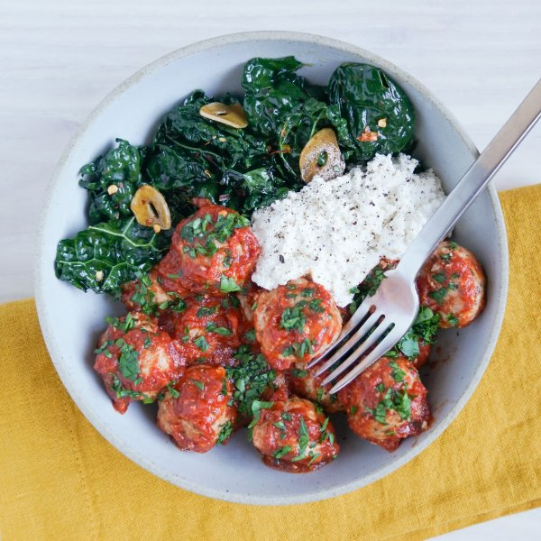

Sun-Dried Tomato Turkey Meatballs with Sautéed Garlicky Kale & Ricotta

Total Time
40 min
Nutrition (Per Serving)
700.4 kcalCalories
59.6 gProtein
29.5 gCarbs
39.9 gFat
Full nutrition table
| Calories | 700.4 kcal |
| Total fat | 39.9 g |
| Saturated fat | 16.3 g |
| Trans fat | 0.7 g |
| Cholesterol | 263 mg |
| Sodium | 369.4 mg |
| Carbohydrates | 29.5 g |
| Fiber | 5.2 g |
| Sugars | 9.5 g |
| Protein | 59.6 g |
| Potassium | 1355.2 mg |
| Calcium | 437.2 mg |
| Iron | 7.2 mg |
| Vitamin A | 1310 IU |
| Vitamin C | 132.4 mg |
| Vitamin D | 55.2 IU |
Cookware
Ingredients
- 2eggs
- 2 clovesgarlic
- 1 ½ lbground turkey
- 1 small bunchItalian (flat-leaf) parsley
- 2 buncheskale
- 2 ozParmesan cheese
- 1 (15 oz) pkgricotta cheese
- 10sun-dried tomatoes, oil-packed
- 2 (8 oz) canstomato sauce
- balsamic vinegar
- black pepper
- crushed red pepper
- extra virgin olive oil
- Italian seasoning
- oregano, dried
- panko bread crumbs
- salt
Steps
- Preheat the oven to 425°F. Coat a large baking dish with a thin layer of oil and set aside.2 tsp extra virgin olive oil
- Finely grate Parmesan. Place in a small bowl along with ricotta, salt, and pepper; stir to combine. Set aside.2 oz Parmesan cheese
1 (15 oz) pkg ricotta cheese
¼ tsp salt
⅛ tsp black pepper - Wash, dry, and shave parsley leaves off the stems; discard stems and mince the leaves. Place half in a medium bowl. (Reserve the other half for serving.)1 small bunch Italian (flat-leaf) parsley
- Roughly chop sun-dried tomatoes. Add to the bowl with the parsley along with half of the cheese mixture, turkey, bread crumbs, eggs, and spices. Using your hands, mix well to combine. (Reserve remaining cheese mixture for serving.)10 sun-dried tomatoes, oil-packed
1 ½ lb ground turkey
⅔ cup panko bread crumbs
2 eggs
1 tsp oregano, dried
½ tsp salt
½ tsp black pepper
½ tsp crushed red pepper - Using a tablespoon measure, form the turkey mixture into rounded meatballs and place in the baking dish.
- Place baking dish in the oven (it doesn't have to be fully heated) and bake until meatballs are lightly browned and nearly cooked through, about 15 minutes.
- Meanwhile, wash and dry kale. Fold leaves in half lengthwise and slice off the stems. Chop or tear leaves into bite-sized pieces and place in a large bowl.2 bunches kale
- Preheat a large skillet over medium-high heat.
- While the skillet heats up, peel and thinly slice garlic. Add to the bowl with the kale.2 cloves garlic
- Once the skillet is hot, add oil and swirl to coat the bottom. Add garlic and kale to the skillet in handfuls, waiting for kale to wilt slightly before adding the next handful. Cook, stirring frequently, until the kale is tender, 1-2 minutes more. (Reserve bowl for later use.)2 tsp extra virgin olive oil
- Add vinegar, crushed red pepper, and salt to the skillet with the kale; stir to combine. Remove from heat and cover with a lid to keep warm.2 tsp balsamic vinegar
½ tsp crushed red pepper
¼ tsp salt - Place tomato sauce, Italian seasoning, and additional crushed red pepper in the reserved bowl. Stir to combine the sauce.2 (8 oz) cans tomato sauce
1 tsp Italian seasoning
½ tsp crushed red pepper - When the meatballs are lightly browned, remove from oven. Pour tomato sauce over meatballs, return to oven, and continue to bake until the sauce is warm and meatballs are cooked through, 2-3 minutes more. Remove from oven.
- To serve, divide meatballs, sauce, kale, and reserved cheese mixture between plates or bowls. Top with reserved parsley and enjoy!